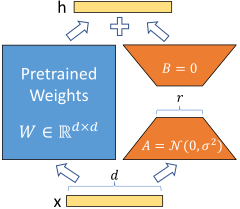

Language · Code
Text-to-SQL with LoRA
Turn natural-language questions and a database schema into SQL queries that return the right answer.

What you’ll build
Fine-tune a small code model, execute its SQL in an isolated SQLite evaluation database and compare results with reference queries.
Model and adaptation
Qwen2.5-Coder-1.5B-Instruct with LoRA on attention q/v projections.
LoRA changes a small set of trainable parameters while retaining a pretrained code model. The key experiment is executable SQL on unseen schemas; general language-model benchmark rankings do not measure this task.
Data
Training
b-mc2/sql-create-context: question, schema and reference SQL triples, split by schema before training.
Evaluation
Held-out schemas plus separate populated SQLite fixtures. Empty tables cannot establish execution accuracy.
How to measure success
- Execution accuracy ↑
- Generated and reference queries return the same result on populated fixtures.
- Valid SQL ↑
- Fraction of queries that execute within the evaluator's limits.
- Exact match ↑
- Textual agreement with reference SQL; not a proof of semantic equivalence.
- Execution coverage ↑
- Fraction of examples with usable fixtures and valid reference queries.
What to submit
- A LoRA adapter and repeatable inference script.
- A small SQLite database with held-out questions and populated fixtures.
- A baseline-versus-LoRA execution report.
- An analysis of joins, aggregation, sorting and invalid queries.